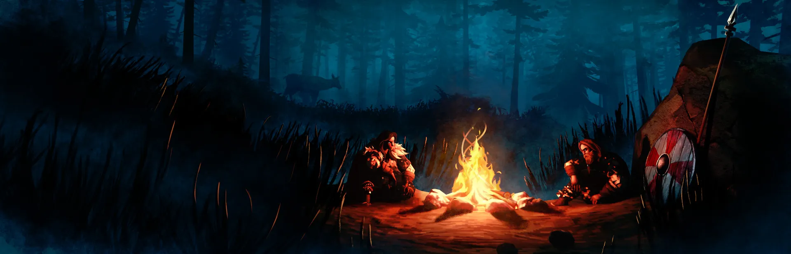

Valheim Beginner Guide
A complete step-by-step walkthrough of Valheim's first hours — from waking at the Sacrificial Stones to crafting bronze gear and defeating the Elder. No prior knowledge needed. Every recipe, every survival tip, every boss strategy covered.

🎯 Step 1: Spawn & First Tools
Your first 5 minutes in Valheim — from waking up to crafting your essential starter tools.
You spawn at the Sacrificial Stones — the ring of standing stones that serves as your permanent spawn point. You're naked, you have nothing, and Hugin the raven will soon appear to give you basic guidance. Listen to him — his tips are genuinely helpful.
Your first action: punch trees. Yes, literally punch them. Walk up to a Beech or Fir tree and left-click to punch it. Each punch does 1 damage to the tree, and after about 10 punches you'll get 1-2 Wood per tree. It's tedious but necessary. You need Wood for everything.
Craft a Stone Axe — press Tab to open your inventory. You'll see your available materials on the left and craftable items on the right. The Stone Axe costs 5 Wood + 4 Stone. Right-click the recipe to craft it. Now you can chop trees efficiently — 3-4 swings per tree instead of 10 punches.
Craft a Hammer — 3 Wood + 2 Stone at your inventory. The Hammer is your most important tool, used for building everything in the game. Without it, you cannot place walls, roofs, workbenches, or any structures.
Pick up Stones from the ground as you walk. Punch or chop more trees. You want roughly ~20 Wood and ~10 Stone before moving on to shelter building.
Basic controls to remember:
- WASD — Move
- E — Interact / Pick up items
- Tab — Open inventory
- Mouse 1 — Attack / Use tool
- Mouse 2 — Block (with shield) / Aim (with bow)
- Shift — Sprint
- Ctrl — Sneak / Crouch
🏡 Step 2: Build Your First Shelter
Night is dangerous. Build a safe place to survive your first night and bed down for the long term.
Find a flat spot near water in the Meadows — not too close to the spawn stones, but not too far either. Being near water is important for later when you need a boat, and the Meadows is the safest biome. Look for a clearing with relatively flat terrain.
Build a Workbench — 10 Wood. Select the Hammer (press 1-8 to equip it from your hotbar), then right-click to open the build menu. Navigate to the Crafting tab and place the Workbench. Important: the Workbench needs a roof over it to function. Build a small 2m x 2m roof over it immediately.
Build your shelter:
- 5 Wall pieces (3 Wood each) — Build 4 walls plus a doorway wall
- Roof pieces (2 Wood each) — Enough to cover the entire shelter
- Door (4 Wood) — Place in the doorway opening
- Bed (8 Wood) — Place inside on the floor
Place a Campfire inside — 5 Stone + 2 Wood. IMPORTANT: The campfire must have a chimney, or smoke will kill you. Build the campfire on the floor of your shelter, then create a 2m x 2m opening in the roof directly above it. Use half-walls or angled roof pieces to funnel the smoke up and out. Smoke inhalation is deadly — if your shelter fills with smoke, you need better ventilation.
Set your spawn point — interact with the bed (press E) to claim it. When you die, you'll respawn at this bed instead of the Sacrificial Stones. This is critical.
Light the campfire and sit near it. You'll see a Rested buff appear on screen — this gives +50% XP gain, faster health regen, and faster stamina regen. The Rested buff is the single most important buff in the game. Always have it before leaving your base.
Quick roof tip: Use 26-degree roof pieces for small, simple shelters. Use 45-degree roof pieces if you're building a larger structure with higher walls. Both are crafted from the same Wood materials.
🏹 Step 3: Gear Up — Crude Bow & Leather
Equip yourself for hunting, combat, and exploration with your first ranged weapon and armor set.
Craft a Crude Bow — 10 Wood + 8 Leather Scraps at the Workbench. This is your first ranged weapon and it's essential for hunting deer and boars safely from a distance.
Craft Wood Arrows — 8 Wood + 2 Feathers + 5 Stone = 20 arrows at the Workbench. Feathers come from killing birds (seagulls, crows) or finding them on the ground. Craft at least 100 arrows before your first boss fight.
Better arrow option: Once you find Flint along the shores of the Meadows, craft Flint Arrows — 2 Flint + 2 Feather + 5 Stone = 20 arrows. These deal significantly more damage than Wood Arrows.
Hunt boars for Leather Scraps. Use your bow from range — boars flee when they take damage, so position yourself to cut off their escape route. Each boar drops 0-2 Leather Scraps. You need 22 Leather Scraps for the full leather armor set.
Craft Leather Armor at the Workbench:
- Leather Tunic — 8 Leather Scraps
- Leather Pants — 8 Leather Scraps
- Leather Helmet — 6 Leather Scraps
Upgrade your Workbench to level 2 by building a Tanning Rack (10 Wood + 15 Flint + 20 Leather Scraps + 5 Deer Hide) near it. This unlocks higher-tier armor upgrades. Use the upgrade tab at the Workbench to improve your armor pieces for better protection.
Hunt deer for Deer Hides and Deer Trophies. Deer are skittish — crouch (Ctrl) as you approach to get closer before firing. Sneak attacks deal bonus damage. Deer Hides are used for crafting upgrades, and you'll need Deer Trophies for the first boss.
While exploring, collect everything you find: Raspberries, Blueberries, Mushrooms, Thistle, Dandelion, Flint, and Stone. These ingredients are used for food, potions, and crafting upgrades.
Eat 3 different foods at all times. Your HP and stamina pools are determined entirely by what you've eaten. Early game, eat Raspberries, Blueberries, and Mushrooms together — they give different stats. Once you can cook meat, add Cooked Boar Meat or Cooked Deer Meat to your diet for larger HP pools.
💀 Step 4: Summon & Kill Eikthyr
Your first Forsaken boss fight. Kill the great stag and claim your first progression item.
Find Eikthyr's altar — look for a large stone structure in the Meadows. A green runestone near the altar will show you the summoning requirements when you interact with it. Eikthyr's altar is always in the Meadows biome, usually within a few minutes' walk from spawn.
You need 2 Deer Trophies to summon Eikthyr. Deer drop trophies randomly when killed — about a 25-30% drop rate. Hunt deer in the Meadows until you have 2 trophies. Use your bow from sneak for the best chance at one-shotting them.
Summon Eikthyr: Walk to the altar and place 2 Deer Trophies in the offering bowl (the glowing depression in the center of the altar stones). Eikthyr will spawn after a few seconds of build-up. Back away and ready your bow.
Fight strategy — KEEP DISTANCE:
- Weapon: Crude Bow or better. At least 60 arrows.
- Food: 3 different foods eaten beforehand for max HP.
- Armor: Leather set (even partial is better than none).
- Buff: Rested buff before the fight.
Eikthyr has two attacks:
- Lightning Bolt (ranged) — Eikthyr rears its head, lightning charges, and the ground glows where the bolt will strike. Sidestep left or right to dodge. Don't roll — a simple strafe is enough.
- Charge (melee) — Eikthyr lowers its antlers and charges toward you. Roll-dodge at the last moment. If you're at medium range, you can also just run sideways.
Stay at medium range — close enough to land consistent arrow shots, far enough to react to the lightning telegraph. Strafe laterally while firing. Keep moving — standing still is how you eat lightning bolts.
Kill rewards:
- Eikthyr Hard Antler — craft the Antler Pickaxe at Workbench (1 Hard Antler + 10 Wood). This is your first pickaxe, and you cannot progress without it.
- Eikthyr Trophy — place it on the boss stone at the Sacrificial Stones for the Forsaken power.
- 3 Deer Trophies
Forsaken Power: Activate Eikthyr's power with the F key — +60% run speed and +60% jump for 5 minutes (with a 20-minute cooldown). This is an absolute game changer for exploration. Use it when you're hauling heavy loads across land or need to escape a dangerous situation.
🌲 Step 5: Enter the Black Forest
With the Antler Pickaxe, you can now mine. The Black Forest is your next destination.
With the Antler Pickaxe in hand, you can now mine ore. Your next destination is the Black Forest — find the edge of your Meadows map where the terrain transitions to darker, denser forest with tall Pine and Fir trees.
Dangers in the Black Forest:
- Graydwarves — humanoid tree-creatures. Basic Graydwarves are easy kills with a club or axe.
- Graydwarf Brutes — large, slow, extremely dangerous. Hit hard. Kite them with arrows.
- Graydwarf Shamans — ranged poison attack. Prioritize them in a group.
- Skeletons — spawn at night. Weak to blunt damage (club/mace).
What to bring to the Black Forest:
- Antler Pickaxe — your mining tool (can be repaired at Workbench)
- Club or Flint Axe — backup weapon for Graydwarves
- Crude Bow + 100 arrows — ranged combat and hunting
- Food — 3 different types for HP and stamina
- Wood and Stone — for emergency repairs
What to mine:
- Copper Ore — large copper-colored rock deposits on the surface. Look for big rocks with orange-brown veins. Each deposit yields 20-40 ore.
- Tin Ore — small shiny rocks with metallic streaks, found near water along the shores of rivers and coastlines in the Black Forest. Smaller deposits than copper.
- Surtling Cores — found in Burial Chambers (dungeon crypts in the Black Forest, visible as stone structures with skeletons outside). Each Burial Chamber has 4-8 Surtling Cores in chests and drop items. You need these for the Kiln and Smelter.
Target resources before leaving:
- 20+ Copper Ore
- 10+ Tin Ore
- 10+ Surtling Cores
Also gather: Flint from Meadows shores, Core Wood from Pine trees in the Black Forest (chop them down for this strong building wood).
Build a Cart (30 Wood + 10 Bronze Nails at Workbench) — this is a game changer for hauling ore. You can load the cart with hundreds of pounds of ore and pull it back to your base. Cart handles terrain poorly on steep hills, so plan your route.
🔥 Step 6: Smelt Bronze & Upgrade
Process your ore, craft bronze, and build the gear that carries you through the next biome.
Build a Kiln — 20 Surtling Cores, 20 Stone, 5 Wood. The Kiln turns Wood into Coal. Feed it Wood (any type), and it produces Coal automatically. You need Coal to fuel the Smelter, so build a Kiln first and start producing Coal immediately.
Build a Smelter — 20 Surtling Cores, 20 Stone. The Smelter smelts Copper Ore into Copper bars and Tin Ore into Tin bars. Each bar takes 1 ore and 1 Coal. Smelt your Copper and Tin simultaneously if you have multiple Smelters.
Build a Forge — 4 Stone + 4 Coal + 10 Wood + 6 Copper. The Forge is where you craft bronze and all bronze-tier items. It's separate from the Workbench and requires its own upgrades.
Craft Bronze — at the Forge, combine 2 Copper + 1 Tin to produce 1 Bronze bar. This is the 1:2:1 ratio you'll use throughout the game. Plan your mining accordingly — you need twice as much Copper as Tin.
Priority bronze crafts:
- Bronze Armor: Bronze Helmet, Bronze Cuirass, Bronze Plate Legs — massive armor upgrade from leather
- Bronze Axe — can now chop Birch trees for Fine Wood (critical for later recipes)
- Bronze Atgeir or Bronze Mace — your primary weapon. Atgeir for crowd control, Mace for the Swamp (Bonemass is weak to blunt)
- Bronze Buckler — shield with parry capability
Upgrade your Workbench and Forge: Build workbench upgrades (Chopping Block, Tanning Rack, etc.) around your Workbench to increase its level. Forge upgrades require different materials unlocked as you progress.
Craft a Hoe — 5 Wood + 2 Stone at the Workbench. The Hoe is essential for flattening terrain around your base. Use it to level the ground for building foundations, roads, and farming plots. A flat base makes building infinitely easier.
Craft a Cultivator — 5 Bronze at the Forge. The Cultivator is needed for farming — you can till soil and plant seeds for Carrots, Turnips, and later crops. Farming is the best source of reliable food.
Build a Fermenter — 30 Fine Wood, 30 Bronze, 10 Resin. This lets you craft mead bases for healing potions and stamina potions. Essential for boss fights and exploring dangerous biomes.
Build a Cauldron — 10 Tin at the Forge. The Cauldron unlocks advanced cooking recipes. Queens Jam (8 Raspberries + 8 Blueberries) is the best early-game food, providing both HP and stamina. Cook it at the Cauldron over a campfire or hearth.
⛵ Step 7: Build the Karve & Find the Elder
Your first real boat, a proper bow, and the journey to find the second boss.
Build a Karve — requires a Workbench near water. The Karve costs: 30 Fine Wood + 10 Deer Hide + 20 Resin + 80 Bronze Nails.
Bronze Nails: 1 Bronze at the Forge yields 20 Nails. You need 4 Bronze bars for 80 Nails.
The Karve is a massive upgrade from the Raft — it's faster, more durable, and has cargo space. Never cross open ocean on a Raft. Always build a Karve first.
Craft a Finewood Bow — 10 Fine Wood + 10 Core Wood + 2 Deer Hide + 10 Feathers + 10 Leather Scraps at the Workbench. This is a significant damage upgrade from the Crude Bow and will be your primary ranged weapon through the Elder fight and into the Swamp.
Before sailing, stock your supplies:
- Food — Queens Jam, Cooked Meat, and a third food for variety
- Arrows — 100+ arrows (Flint or Fire Arrows)
- Portal materials — 10 Fine Wood + 2 Surtling Cores + 10 Greydwarf Eye for one portal
- Spare gear — extra weapons in case you die
Portal strategy: Place a portal at your home base and name it "elder". Bring portal materials on your boat. When you land on a new shore, build the second portal and name it "elder" to connect back to your base. This lets you teleport home instantly with all non-metal items.
Find the Elder's altar: Sail along the coastline of your starting island, keeping the Black Forest biome in sight. The Elder's altar is a large stone structure with runestones inside a Black Forest biome. Look for it from the water — it's usually visible as a raised stone formation with an archway.
Set up on the Elder's island — build a small outpost with a campfire, bed, and your connecting portal (named "elder"). This is your forward operating base for the boss fight.
Collect Ancient Seeds — you need 3 Ancient Seeds to summon the Elder. These drop from Greydwarf Brutes and Greydwarf Shamans in the Black Forest. Farm them while you're in the area.
🗡️ Step 8: Kill the Elder
The second Forsaken boss. A ranged battle of endurance — fire arrows and cover are your best friends.
Summon the Elder: Place 3 Ancient Seeds at the Elder's altar (the large stone arch structure with a bowl at its base). The Elder will spawn after a short animation — back away immediately and get behind cover.
Elder attacks:
- Root Projectile (ranged) — the Elder fires a volley of roots at you. Dodge sideways — don't roll, just strafe behind pillars.
- Tendrils (melee AOE) — roots erupt from the ground around the Elder. Back away immediately — the hitbox is huge.
- Root Storm (summon) — the Elder summons roots from the ground around itself. Move away until the roots stop emerging.
BEST STRATEGY — Fire Arrows: The Elder is weak to fire. Use Fire Arrows (8 Wood + 2 Feather + 1 Flint + 1 Resin = 20 arrows). The burn status effect from Fire Arrows deals additional damage over time, stacking with your arrow damage.
Recipe for Fire Arrows: Craft at Workbench with 8 Wood + 2 Feathers + 1 Flint + 1 Resin for 20 arrows. Resin drops from Greydwarves and is abundant in the Black Forest.
Fight strategy — kite around the pillars:
- Use the stone pillars around the altar as cover from root projectiles
- Stay at max bow range — the Elder is slow, you can keep distance
- Fire continuously — keep the burn effect active for bonus DPS
- Run between pillars — when the Elder faces you, fire; when it attacks, move behind a pillar
- When Elder casts root tendrils around itself, back off — the tendrils have a massive hitbox and will stagger you
Recommended loadout:
- Finewood Bow + 100 Fire Arrows
- Bronze Armor (full set or at least chest + legs)
- Bronze weapon for emergency melee
- Queens Jam + Cooked Meat + a third food
- Rested buff — portal back to your outpost to refresh if needed
Kill rewards:
- Elder Trophy — place at Sacrificial Stones for the Forsaken power
- Swamp Key — this grants access to Sunken Crypts in the Swamp biome. This is the most important drop — without it you cannot mine Iron.
- 3 Ancient Seeds
Forsaken Power: The Elder's power = +10% wood cutting speed for 5 minutes. It's not the most exciting power, but it's genuinely helpful when you're building a large base or gathering wood for charcoal production.
💡 Pro Tips for New Players
The knowledge that separates surviving Vikings from struggling Vikings. Read these before your next expedition.
- Always have the Rested buff — +50% XP gain, +100% health regen, +100% stamina regen. This is the single most important mechanic in Valheim. Never leave your base without it. Build a chair and a rug near your campfire to increase comfort level and Rested duration.
- Eat 3 different foods before combat — Your max HP and stamina are determined entirely by food. Eating 3 of the same food wastes potential stats. Mix a HP food (meat) with a stamina food (berries/jam) and a balanced option for best results.
- Mark everything on your map — Press M to open the map, use the markers (right-click) to place pins. Mark berry bushes, mushroom patches, copper/tin nodes, dungeons, boss altars, beehives, Thistle, and Dandelion. This saves hours of re-finding resources later.
- Build a roof over your Workbench or it won't function. The game checks for "shelter" status — the Workbench must be under a roof with at least two walls nearby.
- Don't sail at night — Serpents spawn in the ocean at night and during storms. A serpent bite deals significant damage to your Karve's hull and can sink you before you reach shore. If you hear the serpent music, head for land immediately.
- Drop a portal before any major expedition — Keep one spare portal at home named "emergency" or similar. Bring portal materials everywhere. If you die on a distant shore, you can build a portal and teleport back to retrieve your gear.
- First upgrade priority: Workbench → Forge → Cauldron → Fermenter. Better gear → better food → better potions → survival. Upgrade in this order for the smoothest progression.
- Build a Karve before sailing far — The Raft is too fragile for open water. One serpent encounter on a Raft is almost certainly fatal. The Karve costs resources but is worth every nail.
- Use a Hoe to flatten base terrain before building — The Hoe's "Level Ground" function creates a flat foundation. This makes building infinitely easier and prevents your structures from looking crooked or uneven.
- Keep backup gear in a chest at your base — If you die in a dangerous location and need to corpse-run, having a spare set of basic gear (leather armor, a club, a bow) makes retrieval infinitely easier than running naked.
- Don't carry all your metal ore at once — If you fill your boat with 200 Copper Ore and die to a serpent, that ore is gone. Make multiple trips with smaller loads. The sea is dangerous. Respect it.
- Accept death — it will happen — Build multiple beds at different outposts. Always have a backup bed somewhere. Death is a learning tool in Valheim, not a failure condition. Learn from each death and adapt.
- Avoid the Plains until you have bronze gear or better — Deathsquitos are not an exaggeration. These flying insects will one-shot you in leather armor and chase you across the map. The Plains is a mid-game biome. Leave it until you're ready.
- Stamina management is the core combat skill — Never swing your weapon until your stamina is empty. Leave 20-30% stamina for dodging and blocking. If you're out of stamina, you're a sitting duck. Attack in controlled bursts.
❓ Frequently Asked Questions
Common questions new Valheim players ask, answered concisely.
What should I do first in Valheim?
How do I get the Antler Pickaxe?
How do I find the Black Forest?
How do I survive the first night?
How do I get bronze?
What food should I eat early game?
How do I beat Eikthyr?
Can I skip bosses?
Why does my bed say "No roof"?
How do I get more inventory space?
What is the rested buff?
Data Sources & References
- Iron Gate Studio Official — Game data, recipes, and patch notes
- r/valheim Community — Player-tested strategies and survival tips
- Valheim Wiki — Crafting recipes, boss mechanics, and progression data
Was this beginner guide helpful?
🌲 Advanced Survival Topics
Once you have mastered the basics, expand your survival knowledge with these dedicated guides.
Base Building
Structural integrity explained. Workshop layouts, portal networks, and advanced construction techniques.
Building Guide →Base Defense & Raids
All raid events, dry moat designs, spawn-proofing, and defense strategies for every biome.
Defense Guide →Taming & Breeding
Tame boars, wolves, lox, and asksvin. Breeding mechanics, pen designs, and creature farming.
Taming Guide →Food & Cooking
40+ recipes with HP/Stamina stats. Cauldron upgrades, mead brewing, and best food combos.
Food Guide →